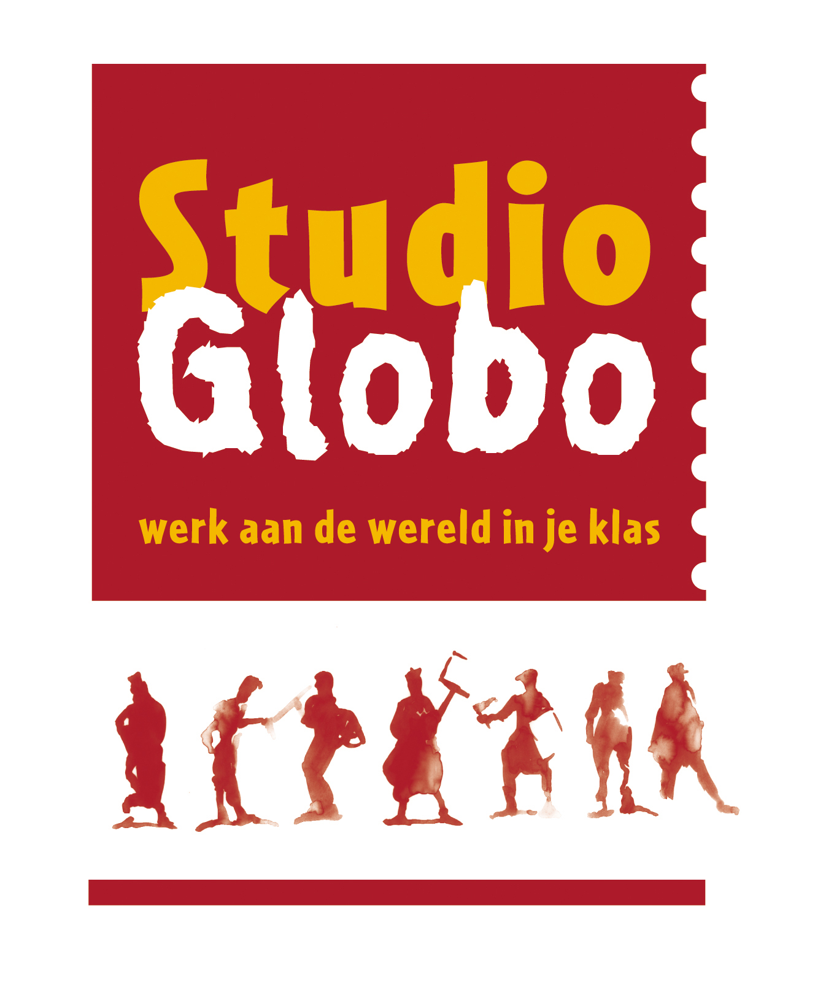

In deze wereld wonen er veel mensen met elk hun eigen cultuur, overtuiging of gewoontes.
Iedereen is dus verschillend.
De toenemende globalisering zorgt ervoor dat diversiteit of verscheidenheid zich automatisch opdringt.
In deze bachelorproef proberen wij kleuterleerkrachten de nodige inspiratie en ondersteuning te bieden om het mondiaal werken met de jongste kleuters zo toegankelijk mogelijk te maken.
Dit doen we a.d.h.v. een werkmap waarin we een bepaalde cultuur of een bepaald land voorstellen, uitgewerkt met concrete voorbeelden en activiteiten.
Onze werkmap werd gemaakt in samenwerking met Studio Globo & Artevelde Hogeschool.
